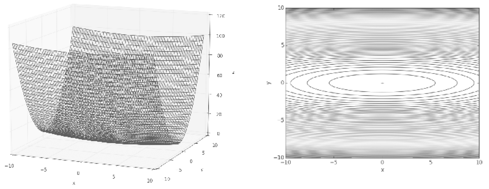
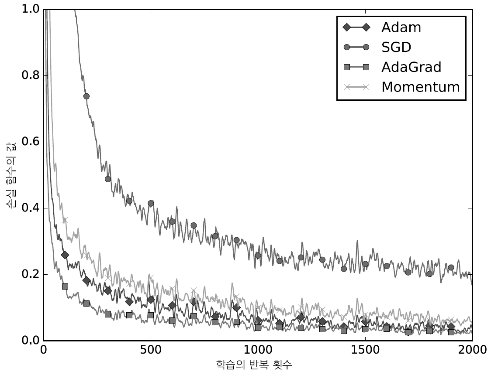

class SGD:
def __init__(self, lr=0.01):
self.lr = lr
def update(self, params, grads):
for kye in params.keys():
params[key] -= self.lr * grads[key]
network = TwolayerNet(...)
optimizer = SGD()
for i in range(10000):
...
x_batch, t_batch = get_mini_batch(...)
grads = network.gradient(x_batch, t_batch)
params = network.params
optimizer.update(params, grads)
...10 Optimaizer
지금가지 신경망(ANN)에 대하여 전반적인 내용을 살펴 보았습니다. 이제 학습의 효율 또는 정확성을 높일 수 있는 방법 또는 기법에 대하여 학습하고자 합니다.
먼저 신경망 학습의 목적은 손실함수 값을 최소화하는데 있습니다. 어떠한 값을 최소화 또는 최대화하는 문제는 최적화(optimaization)이라 합니다. 다만, 신경망의 경우 벡터로 표현되는 매개변수의 공간이 매우 넓고 복잡하여 간단하게 수식으로 정의하는 것은 매우 어려운 문제입니다.
이러한 복잡한 최적화의 문제는 매개변수를 어떻게 업데이트 할 것인가, 또는 매개변수의 초깃값을 어떻게 설정 할 것인가의 관점에서 접근해볼 수 있습니다.
10.1 Methodologies for updating parameters
신경망의 매개변수 최적화를 위해 우리는 기울기(편미분)를 시용하여 배개변수 값을 지속적으로 갱신하는 확률적 경사하강법(SGD)을 사용하였습니다.
우리는 여기서 SGD의 장단점을 살펴보고 매개변수를 업데이트 하는 다른 최적화 기법들에 대하여 살펴 보도록 하겠습니다.
10.1.1 Stochastic Gradient Descent(SGD)
SGD의 수식은 다음과 같습니다, 여기서 \textbf{w}는 갱신할 가중치이고 \frac{\partial{L}}{\partial{\textbf{W}}}는 \textbf{w}의 손실함수에 대한 기울기 입니다. \eta는 학습률1로 가중치를 기울기로 업데이트 하는 크기를 의미합니다.
1 학습률의 Step size를 어떻게 정하냐에 따라 Overshotting 또는 trapping의 문제가 발생할 수 있습니다.
\textbf{W} \leftarrow \textbf{W} - \eta\frac{\partial{L}}{\partial{\textbf{W}}}
위의 식을 간단한 클래스로 구현하도록 하겠습니다.
SGD의 경우 위와 같이 구현이 쉽다는 장점이 있습니다. 다만, 경우에 따라 비효율적일 때가 있기 때문에, 매개변수를 갱신하는 다른 최적화 기법들이 필요한 것입니다.
먼저 f(x, y) = \frac{1}{20}x^2+y^2의 합수를 이용하여 최소값을 구하는 문제를 살펴보겠습니다. 이 함수는 아래의 그림(Figure 10.1 )과 같이 그릇을 X축의 방향으로 늘인 타원과 같습니다.

등고선을 살펴보면 y축방향으로 가파르나 x축 방향으로는 완만한 거의 0에 가깝다는 것을 알 수 있습니다. 이러한 함수에 SGD를 적용하면 지그재그로 움직이는 비효율적인 모습을 보여줍니다. 이를 SGD의 단점 비등방성이라 하고 학습의 효율을 하락시키게 되는 것입니다.

이는 기울기의 반대방향으로 매개변수인 가중치를 갱신하는 단순성에서 나오는 문제로 이를 개선해주는 방법으로 Momentum, AdaGrad, Adam 등이 있으며 이를 살펴보도록 하겠습니다.
10.1.2 Momentum
모멘텀은 ’운동량’을 뜻하는 단어로 그 수식은 아래와 같습니다.
\begin{align} \textbf{v} &\leftarrow \alpha\textbf{v}-\eta\frac{\partial{l}}{\partial{\textbf{W}}} \\ \textbf{W} &\leftarrow \textbf{W} + \textbf{v} \end{align}
SGD와 가장 큰 차이점은 \textbf{v}(velocity)가 등장하여 기울기 방향으로 힘을 받아 물체가 가속되는 물리법칙을 의미합니다. 또 하나는 \alpha\textbf{v}항 아무런 힘이 영향을 주지 않을 때 운동량을 약화 시키는(저항에 해당) 역할을 한다는 것입니다.
이러한 모멘텀 클래스를 구현하면 아래와 같습니다.
class Momentum:
def __init__(self, lr=0.01, momentum=0.9):
self.lr = lr
self.momentum = momentum
self.v = None
def update(self, params, grads):
1 if self.v is None:
self.v = {}
for key in params.items():
self.v[key] = np.zeros_like(val)
for key in params.keys():
self.v[key] = self.momentum * self.v[key] - self.lr * grads[key]
params[key] += self.v[key]- 1
-
v인스턴스변수는 초기 아무값도 담지 않고,update()호출시 매개변수와 같은 구조의 딕셔너리 변수로 저장
모멘텀을 이용하는 방식을 사용하는 경우 SGD에 비하여 가중치를 갱신하는 경우 지그재그로 움직이는 정도가 줄어 들었음을 확인 할 수 있습니다.

10.1.3 AdaGrad
AdaGrad는 신경망 학습에서 학습률을 정하는 기술로 그 수식은 아래와 같습니다.
\begin{align} \textbf{h} &\leftarrow \textbf{h}+\frac{\partial{L}}{\partial{\textbf{W}}} \odot \frac{\partial{L}}{\partial{\textbf{W}}} \\ \textbf{W} &\leftarrow \textbf{W} + \eta\frac{1}{\sqrt{\textbf{h}}}\frac{\partial{L}}{\partial{\textbf{W}}} \end{align}
즉, 초기에는 학습률을 크게 하고 학습이 진행됨에 따라 학습률을 작게 하는 신경망 학습 방법입니다. 이때 학습률을 낮추는 방법은 매개변수 각각에 맞는(적응하는) 학습률을 정하는 방법입니다.
여기서 \textbf{h}가 등장합니다. 이 값은 기울기를 제곱하여 계속 더해주게 됩니다. 그리고 매개변수인 가중치를 갱신할 때 \frac{1}{\sqrt{\textbf{h}}}를 곱하여 학습률을 조정해 줍니다.
이는 이전 스텝에서 크게 갱신된 매개변수(가중치)는 이번 스텝에서 낮은 학습률을 적용하여 원소마다 상이한 학습률을 갖도록 한다는 것으로 이해할 수 있습니다.
이러한 AdaGrad 클래스를 구현하면 아래와 같습니다.
class AdaGrad:
def __init__(self, lr=0.01):
self.lr = lr
self.h = None
def update(self, params, grads):
if self.h is None:
self.h = {}
for key, val in params.items():
self.h[key] = np.zeros_like(val)
for key in params.keys():
self.h[key] += grads[key] * grads[key]
params[key] -= self.lr * grads[key] / (np.sqrt(self.h[key]) + 1e-7)AdaGrad를 이용한 합습경로를 보면 최솟값을 향해 효율적으로 움직이는 것을 확인할 수 있습니다.

RMSProp(=EWMA)
- AdaGrad는 이전의 기울기 값들이 지속적으로 제곱하여 더해가는 방법론입니다. 이로인해 학습을 진행할수록 학습률은 0에 근접하여 갱신이 이루어지지 않을 수 있는 문제를 내포하고 있습니다.
- 이러한 문제를 개선하고자 고안된 방벙이 RMSProp입니다. 이는 과거의 모든 기울기를 균일하게 더하는 것이 아니라 먼 과거의 기울기를 서서히 잊고 새로운 기울기 정보를 크게 반영하는 방법입니다.
10.1.4 Adam
Adam은 정확하지는 않지만 직관적으로 모멘텀과 AdaGrad를 융합한듯한 방법입니다. 이 두 이점을 조합했다고 단순히 이해할 수 있습니다.2
2 Adam에 대하여 보다 자세하게 이해하기 위하여는 Adam논문을 읽어 보시기 바랍니다.
이러한 Adam 클래스를 구현하면 아래와 같습니다.
class Adam:
def __init__(self, lr=0.001, beta1=0.9, beta2=0.999):
self.lr = lr
self.beta1 = beta1
self.beta2 = beta2
self.iter = 0
self.m = None
self.v = None
def update(self, params, grads):
if self.m is None:
self.m, self.v = {}, {}
for key, val in params.items():
self.m[key] = np.zeros_like(val)
self.v[key] = np.zeros_like(val)
self.iter += 1
lr_t = self.lr * np.sqrt(1.0 - self.beta2**self.iter) / (1.0 - self.beta1**self.iter)
for key in params.keys():
self.m[key] += (1 - self.beta1) * (grads[key] - self.m[key])
self.v[key] += (1 - self.beta2) * (grads[key]**2 - self.v[key])
params[key] -= lr_t * self.m[key] / (np.sqrt(self.v[key]) + 1e-7)Adam을 이용한 합습경로를 보면 앞서 설명한 바와 같이 모멘텀 및 AdaGrad가 혼합된 형태로 최솟값을 향해 효율적으로 움직이는 것을 확인할 수 있습니다.

Adam의 하이퍼파라미터
Adam에는 3개의 하이퍼파라미터를 설정해야 합니다.
- \alpha: 매개변수 업데이트 정도인 학습률
- \beta_1: 1차 모멘텀 계수로 논문에서는 0.9를 기본값으로 설정
- \beta_2: 2차 모멘텀 계수로 논문에서는 0.999를 기본값으로 설정
10.2 Comparing Methodologies for Updating Parameters
우리가 살펴본 4가지의 모델 중 과연 어떠한 모델이 좋을까요? 이런 물음에 대한 답은 아직까지는 없다 입니다. 이는 문제의 성격에 따라 모델별로 잘 푸는 문제가 따로 있기 때문입니다.
이러한 모델의 비교는 성능을 측정하여 우월성을 판단하기 위한 것이 아니라 모델별 성격에 따라 학습의 진도가 어떻게 다른지 이해하기 위함합니다.
먼저 MNIST 데이터 셋을 이용하여 손글씨 인식문제의 학습진도를 비교해 보도록 하겠습니다.

위 비교에 사용된 신경망은 각층이 100개의 뉴런으로 구성된 5층 신경망에 ReLU를 활성화 함수로 사용한 결과 입니다. SGD의 학습 진도가 가장느리고 나머지 3가지 모델은 학습 진도가 매우 유사합니다.
이러한 결과는 일반적인 결과이고 나머지 3개의 모델은 학습률 등 하이퍼파라미터의 설정 또는 신경망의 구조에 따라 결과가 달리 나올수 있다는 점만 이해하도록 하겠습니다.